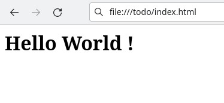
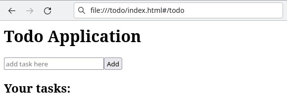
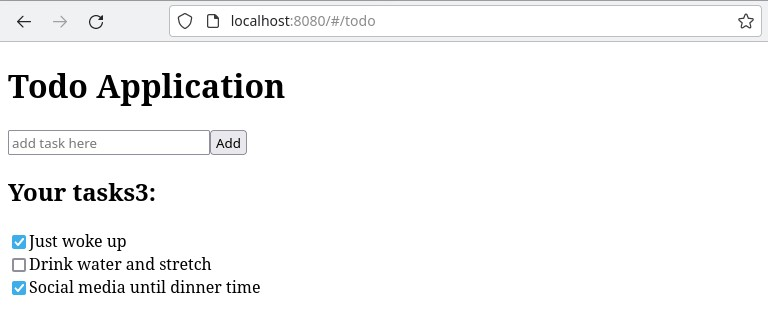

1. Guide Assumptions
This guide is designed for beginners who want to get started with Comet.cpp from scratch. It does not assume any prior experience with Comet.
We assume you are already familiar with the C++ programming language and CMake building tools.
We also assume you are familiar with the JavaScript DOM API, as a lot of the work done on developing browser-side web applications revolves around interacting with the Document Object Model.
2. Creating a new Comet Application
The best way to read this guide is to follow it step by step. All steps are essential to run this example and no additional code or steps are needed.
By following this guide, you'll learn how to create a Single Page Application by creating a simple todo list application.
2.1 Installing Comet.cpp
First, if you haven't already done it before, you need to install Comet.cpp. You may do so by following the guide corresponding to your operating system:
2.2 Creating the Todo application
Comet comes with a application generator tool which will provde you the fundation of a fresh Comet application, so that you don't have to write it yourself.
To use this generator, open a terminal, navigate to the directory in which you wish to create the application, and type
$ comet new --name todo
This will crate a Comet application called Todo in a `todo` directory.
After you create the todo application, switch to its folder:
$ cd todo
The todo directory has a number of auto-generated files and folders that make up the structure of a Comet application. Here's a basic rundown on the function of each file and folders that Comet created by default:
| File/Folder | Purpose |
|---|---|
| main.cpp | Defines the webMain function: it is the entry point of your application. |
| application.hpp | Defines a singleton class containing the globals of your application. |
| routes.cpp | This is where you'll bind your routes with your controller methods. |
| config.json | This file contains configuration variable for your HTML templates. |
| index.html | A simple html file from which you can run your application. |
3. Hello, Comet !
3.1 Route handlers
To begin with, let's get some text up on screen quickly. We'll implement a simple route handler that will display "Hello World !". Update the router as following:
routes.cpp
#include <comet/router.hpp>
#include <comet/globals.hpp>
using namespace Comet;
void Router::initialize()
{
match("/?", [](const Params&)
{
body > Element("h1").text("Hello World !");
});
}
The match method allows you to define a pattern and a callback which will be evaluated when the location hash changes.
The first parameter is the pattern that matches the route. In this case, /? will match for the hashes # and #/, making this route trigger by default when the application loads.
3.2 DOM semantics
Next comes the lambda. We'll go over the Params objet later. Focus on the lambda's body for now:
body > Element("h1").text("Hello World !");
The Comet::body global points to document.body,
which is a DOM element. In Comet, you can append an element or a list
of elements to another element by using the operator>.
In this case, we create a DOM element with the tag <h1> using
the Comet::Element class, and use the text
method to set its inner text to "Hello World !".
We've just scratched the surface : using this syntax, you can build complete HTML documents. Check out the following example:
body > Elements{
Element("h1").text("Hello World !"),
Element("div") > Element("span").text("Welcome to Comet.cpp !")
}
Here, we've used Comet::Elements to append a list
of two elements, rather than a single one. Using the same
initialization semantics, we were able to nest the creation
of a <span> element containing our subtitle.
3.3 Build and run
Let's see what our application looks like. Build your application by running the following command:
$ comet build
Once the process is over, open the index.html file:
$ xdg-open index.html
Your application should warmly greet you with an "hello world":
4. Take control with Controllers
We've learn how to implement simple route handlers, without using the MVC components of Comet. In this chapter, we'll introduce the MVC pattern, starting from the C of Controllers.
4.1 Scaffolding a controller
Firstly, we'll scaffold a new controller using the command line interface:
$ comet scaffold controller -n Todo
The scaffold comment role is to speed up your work by
providing you with the basic structure for controllers, models
or views. The command we just ran created the controllers/todo.hpp
and controllers/todo.cpp file.
4.2 Actions
Actions are method of a controller designed to be called from
a Router. It's typically the place where you'll
interact with remote servers and render views.
Declare the index action which will greet our
users to our todo list:
controllers/todo.hpp
#pragma once
#include <comet/controller.hpp>
class TodoController : public Comet::Controller
{
public:
TodoController(const Comet::Params&);
Comet::Promise initialize() { ... }
Comet::Promise finalize() { ... }
// declare your action method:
void index();
};
And implement it in the controller's source file:
controllers/todo.cpp
#include "todo.hpp"
#include <comet/globals.hpp>
#include <comet/comment_element.hpp>
using namespace std;
using namespace Comet; // <- include this namespace
TodoController::TodoController(const Params& params)
: Comet::Controller(params)
{
}
// implement the index action:
void TodoController::index()
{
body.empty();
body > Element{
Element("h1").text("Todo Application"),
Elements("div") > Elements{
Element("input", {
{"type","text"},
{"placeholder","add task here"}
}),
Element("button").text("Add")
},
Element("div") > Elements{
Element("h2").text("Your tasks:"),
CommentElement("Anchor element")
}
};
}
Similarly to what we've seen in the DOM semantics chapter, we modify the DOM to clear the HTML document, and append a small interface to add tasks.
Let's now add this action to the router:
routes.cpp
#include <comet/router.hpp>
#include "controllers/todo.hpp"
using namespace Comet;
void Router::initialize()
{
match_action("/todo", TodoController, index);
}
The match_action macro works similarly to the match
router method. When the location hash matches your route, it will instantiate
your controller, initialize it, and call your action method.
match_action also handles your controller lifetime. Your controller
will remain in memory until right before a new route is triggered. You can react
to such events in your controller's destructor.
Let's see how that looks: build your application with the comet build
command, open the index.html file, and append the following characters
to the URL bar: #/todo.
Your controller action will trigger, and you'll see the elements we created earlier appear before your eyes:
4.3 DOM Events
We've seen how to design HTML document using the DOM syntax... but we don't react to events yet. Let's see how we would react to our UI's button being clicked on:
controllers/todo.cpp
void TodoController::index()
{
// Define elements outside the DOM initializer:
static Element button("button");
static Element input("input");
static CommentElement anchor("Anchor element");
button.events->on("click", [&](client::MouseEvent*)
{
Element("div")
.text(input.value<string>())
.insert_after(anchor);
input.value("");
});
body.empty();
body > Elements{
Element("h1").text("Todo Application"),
Elements("div") > Elements{
input.attr({
{"type","text"},
{"placeholder","add task here"}
}), // <- We insert the input here
button.text("Add") // <- We insert our button here
},
Elements("div") > Elements{
Element("h2").text("Your tasks:"),
anchor // <- Lastly, the anchor element goes here
}
};
}
Note that we create three static DOM elements at the top of our function. We could also store these into the class, but we've used static variables to make this chapter more readable.
We start by adding an event handler on the button, by using the events property.
The event we receive has the client::MouseEvent* type: it is a native JavaScript
event (MouseEvent),
directly accessible from C++ by using Cheerp's client namesapce.
We don't rely on the event in this case: we just want to append a new line to our task list, using the value of our text input.
This is where the anchor element come from. Anchor is a word we used to call a element that serves as a reference to figure out where new elements should be inserted into the DOM.
This is where the CommentElement enters the ring. It implements a DOM comment,
which is entirely invisible to the user, and doesn't disturb the HTML document's layout.
CommentElements are the ideal candidate for an anchor: that is, a DOM
element that we use as reference to know where to append new elements in the DOM.
To add a line to our task list, we just have to ensure that the anchor is present in the DOM
where we want our new elements to pop. Then, we use the insert_before or insert_after method, depending on whether we want new elements to appear on top or at the bottom of a list. Here, we want the newest elements on top, so we use insert_after such as:
Element("div")
.text("Some text")
.insert_after(anchor);
input.value<string>() is used to retrieve the value of an <input> element, in this
case, the text content of our input element. We then use input.value("")
to clear the field.
5. Knock your SOC off with Views
Up until now, we've made simple views and defined them entirely in our controllers. It allowed us to learn the DOM syntax, which will regularly be useful to you when performing small changes over your interfaces.
However, this doesn't follow the Separation Of Concern principle, which is a worthy ally in any project of a reasonable size. We're now going to learn about a tool that Comet provides to help us being more SOC-friendly: the view templating tools.
5.1 Scaffolding a layout
Our first step will be to create a layout for our application. Comet views are always rendered
within a layout view - except the layout views themselves, which get rendered directly in the <body> element of a page, or any element which responds to the [comet-app="main"] selector.
Start by scaffolding a our layout with the following command:
$ comet scaffold layout -n application_layout
This will generate two files for you:
| File | Purpose |
|---|---|
| views/layouts/appication_layout.html | This is the html template for your view |
| views/layouts/application_layout.hpp | This is an object extending on your html template, allowing you to implement C++ view logic separately from the HTML. |
Let's take a look at the html file first:
<template>
<body>
<slot name="content"></slot>
</body>
</template>
This is as simple as a layout can get: it just defines a <slot> called content. Slots are used to insert your own custom elements in a view template: any layout you create is expected to expose such a slot with the content name. It is where your view's content will be displayed.
A layout can be used to render elements that are common in many views. If you want all your pages to display the application name, you could do it this way:
<template>
<body>
<h1>Todo Application</h1>
<slot name="content"></slot>
</body>
</template>
5.2 Scaffolding a view
We have a layout. The next step is to create a view that will be rendered inside the layout. Use the following command to scaffold a view:
$ comet scaffold view -n TodoView
This will create the files views/todo_view.hpp and views/todo_view.html.
We will edit these file to re-implement the behaviour we've created in the controller chapter, but using views instead of the DOM syntax:
views/todo_view.html
<template>
<body>
<div>
<input type="text" placeholder="add task here" />
<button>Add</button>
</div>
<div>
<h2>Your tasks:</h2>
</div>
</body>
</template>
5.3 Rendering a view
Let's see if this thing works ! Open the TodoController source file and update the index action's method:
controllers/todo.cpp
// Add the includes to our layout and views:
#include "views/layouts/application_layout.hpp"
#include "views/todo_view.hpp"
...
void TodoController::index()
{
use_layout<ApplicationLayout>()
.render<TodoView>();
}
It's all it takes: the use_layout will instantiate an ApplicationLayout and append it to
the view, then the render method wil instantiate our view and append to the the layout's
content <slot>.
render method takes your view's constructor parameters as its own parameters, and returns
a std::shared_ptr of your custom element.
You can now build your application and open the index.html file again.
5.4 Making interacting views
We've generated the same interface as before using the template system instead of the DOM C++ syntax. However, it isn't interactive yet. Let's tackle that issue. The first thing we need is a way to interact with our DOM elements:
5.4.1 Accessing your view elements
There are several ways to interact with your view elements. The first one we'll see is how to get a handle on your views element. It's done by using the ref attribute. Update the <input> and <button> elements as such:
<input ref="add_input" type="text" placeholder="add task here" />
<button ref="add_button">Add</button>
Using the ref attribute make these elements visible from your custom element class: we can now implement event handlers in our element class as such:
#pragma once
#include "templates/todo_view.hpp"
class TodoView : public HtmlTemplate::TodoView
{
public:
TodoView() : HtmlTemplate::TodoView
{
add_button.events->on("click", [this]()
{
add_task(add_input.value<std::string>());
add_input.value("");
});
}
void add_task(const std::string& content)
{
}
};
This way we can react to view events and interact with our DOM elements from our C++ code.
5.4.2 Bindings
Views provide simple ways to share and display C++ values to your HTML templates. We'll explore
these possibilities by adding a std::vector container in our template that will store
our task list:
<template>
<head>
<attribute type="std::vector<std::string>" name="tasks" />
</head>
<body>
...
</body>
</template>
We've added a <head> section to our view template: this section is used to define a view's metadata, such as properties, dependencies towards other custom elements, or even custom C++ code to include into their headers.
We use the <attribute> element to add a vector container to our custom element. Let's use it
in a binding:
<template>
...
<body>
...
<div class.bind='tasks.size() ? "task-list" : "task-list-empty"'>
<h2>Your tasks:</h2>
</div>
</body>
</template>
The .bind suffix can be used on any attribute of a DOM element to assign a value from C++.
On top of DOM attributes, you can also use .bind with these Comet-defined attributes:
show.bindcan be bound to a boolean value to make an element visible or hidden.text.bindcan be used to set a DOM element'stextContentproperty.innerhtml.bindcan be used to set a DOM element'sinnerHTMLproperty.
Here's an example making use of these Comet-defined attributes:
<template>
...
<body>
...
<div show.bind="tasks.size()">
<h2>Your <span text.bind="tasks.size()" /> tasks:</h2>
</div>
</body>
</template>
With these bindings, the task list will be hidden when it's empty, and the task list title will display the amount of tasks present in the list.
Let's now implement the add_task method in our custom element header:
views/todo_view.hpp
#pragma once
#include "templates/todo_view.hpp"
class TodoView : public HtmlTemplate::TodoView
{
...
void add_task(const std::string& content)
{
tasks.push_back(content);
trigger_binding_updates();
}
};
As the tasks attribute created in our view template is visible from our custom element header, we can merely use push_back to append new elements to it.
Afterwards, we call the trigger_binding_updates method: this is when the magic happens. The code
in every bound attribute from your view will run, updating your entire view.
5.4.3 Repeaters
While we've been able to pull C++ values into our template, we still haven't displayed the actual list of tasks. In Chapter 4, we did that by creating an anchor element, and manually creating each element in our controller.
In this chapter, we'll see a more sophisticated way of achieving the same result by using a repeater:
<template>
<head>
<attribute type="std::vector<std::string>" name="tasks" />
</head>
<body>
...
<div show.bind="tasks.size()">
<h2>Your <span text.bind="tasks.size()" /> tasks:</h2>
<!-- Here comes the repeater: -->
<div repeat.for="task of [std::vector<std::string>]tasks">
<b>Task</b>: <span text.bind="task" />
</div>
</div>
</body>
</template>
The repeat.for attribute specifies that a given element will be repeated for each element in a container.
The element containing the repeat.for attribute is the one that gets replicated, meaning you could also achieve the same result with the following:
<div repeat.for="task of [std::vector<std::string>]tasks"
innerhtml.bind='"<b>Task</b>: " + task'>
</div>
innerhtml opens the door to HTML injection, as any HTML present in the
task variable won't be escaped. Binding text instead prevents that issue.
5.4.4 View events
You may also connect DOM events to C++ methods directly from the view. In this chapter, we'll refactore our custom element code by handling the click event within our view template:
<template>
<head>
<attribute type="std::vector<std::string>" name="tasks" />
<script>
virtual void add_task(const std::string&) = 0;
</script>
</head>
<body>
<div>
<input ref="add_input" type="text"
placeholder="add task here" />
<button click.trigger="add_task(add_input.value())">
Add
</button>
</div>
<div>
<h2>Your tasks:</h2>
<div repeat.for="task of [std::vector<std::string>]tasks">
<b>Task</b>: <span text.bind="task" />
</div>
</div>
</body>
</template>
We've added two things here:
-
First, we added a <script> section in the <head> section, and used it to declare
add_taskas a pure virtual method. -
Secondly, we added the
click.triggerattribute to our <button> and used it to call theadd_taskmethod.
As a result, our custom element header doesn't need its constructor anymore. Open the header file, remove the constructor, and add the override keyword after the add_task declaration.
#pragma once
#include "templates/todo_view.hpp"
class TodoView : public HtmlTemplate::TodoView
{
public:
void add_task(const std::string& content) override
{
tasks.push_back(content);
trigger_binding_updates();
}
};
5.5 Custom Elements
Custom Elements are C++ elements that can be instantiated directly from html templates. Now, you've already created Custom Elements: truth is, views are already Custom Elements. Basically, "view" is the name we give to a Custom Element that's rendered in a Layout and from a Controller.
Custom Elements don't even need to use html templates. Let's start by creating a simple Custom Element that will display a single task:
elements/task_line.hpp
#pragma once
#include <comet/custom_element.hpp>
class TaskLine : public Comet::CustomElement
{
Comet::Element text;
public:
TaskLine() : Comet::CustomElement("div")
{
text = Comet::Element("label");
*this > text;
}
void set_text(const std::string& value)
{
text.text(value);
}
};
This is as simple as it gets: we created a class inheriting Comet::CustomElement, then
as it gets constructed, we defined its tagName to "div", and we append a <label> element to
its children list.
5.5.1 Instantiate a Custom Element from a view
Now that we've created our custom element, let's instantiate it from our todo view. Before using our new element, we must require it in our view's <head> section:
views/todo_view.hpp
<template>
<head>
<include src="elements/task_line.hpp" require="::TaskLine" />
<attribute type="std::vector<std::string>" name="tasks" />
</head>
...
</template>
The <include> element can be used to include C++ headers in your html template. You can then require a class defined in that header, which must be either a Custom Element or a View. The class name will be mapped to an HTML tagName, allowing you to instantiate it in your view as such:
views/todo_view.hpp
<template>
...
<body>
...
<div show.bind="tasks.size()">
<h2>Your <span text.bind="tasks.size()" /> tasks:</h2>
<!-- Here comes the repeater: -->
<div repeat.for="task of [std::vector<std::string>]tasks">
<task-line cpp::text.bind="task" />
</div>
</div>
</body>
</template>
Notice the cpp::text attribute: this cpp:: prefix tells the html
template to use a C++ setter, instead of a DOM attribute setter. In this case, the
set_text method we defined in elements/task_line.hpp will be called
with task as an attribute.
5.5.2 Define global custom elements
Some custom elements will be used often in your application, and you might want to skip
the requiring step. You can use config.json to that end, by defining a global
custom element:
config.json
{
"elements": [
{
"require": "TaskLine",
"include": "elements/task_line.hpp",
"tagName": "task-line"
}
]
}
With this change, the <task-line> element is now available in all your view templates, without having to explicitely include those with an <include> element.
config.json.
6. Models and Collections
Comet also provides tools to help you represent your application data, with classes allowing you to define Models and Collections. This Model layer also comes with helpers making it easy to fetch or update data with a remote server.
6.1 Defining a Model
Let's define a model for our tasks. Since we'll use JSON to store our
models, we'll create a class that implements Comet::JsonModel:
models/task.hpp
#pragma once
#include <comet/mvc/json_model.hpp>
class TaskModel : public Comet::JsonModel<>
{
std::string text;
bool done;
public:
const std::string& get_text() const { return text; }
bool is_done() const { return done; }
void set_text(const std::string& value) { text = value; }
void set_done(bool value) { done = value; }
// We won't use the model URL, but each model
// implementation must provide this method:
std::string get_url() const override
{
return "tasks.json/" + std::to_string(get_id());
}
void from_json(Data json_data) override
{
id = json_data["id"].defaults_to<id_type>(0);
text = json_data["text"].as<std::string>();
done = json_data["done"].defaults_to<bool>(false);
}
std::string to_json() const override
{
DataTree json_data;
if (get_id() != 0)
json_data["id"] = get_id();
json_data["text"] = text;
json_data["done"] = done;
return json_data.to_json();
}
};
When implementing Comet::JsonModel, we must provide at least the
three following methods:
get_urlwhich should return the remote path used to fetch and update a given resource.from_jsonwhich loads our Model from JSON data represented by aDataobject.to_jsonwhich should render our Model as a JSON object.
Comet::JsonModel lets you define ID traits for your model. By
default, Comet::LongIdTraits is used, and model IDs are stored as unsigned long.
You can also use Comet::StringIdTraits if your models are identified by strings of characters.
6.2 Defining a Collection
We will also create a Collection, which will help us interact with groups of Models:
collections/task.hpp
#pragma once
#include <comet/mvc/json_collection.hpp>
#include "models/task.hpp"
class TaskCollection : public Comet::JsonCollection<TaskModel>
{
public:
std::string get_url() const override { return "tasks.json"; }
std::string resource_name() const override { return "tasks"; }
};
Implementation of collections of any type require us to provide at least the two following methods:
get_urlwhich is the URL used when callingfetchon a Collection.resource_namewhich can be used to specify the JSON key under which the collection's model list will be defined in a JSON response from a remote server.
6.2.1 Resource names
To better understand how resource names are used, here's what a JSON response is expected to look like when
the resource_name method returns "tasks":
{
"tasks": [ // <- your resource name is used as a JSON key
{"id": 1, "text": "Drink water and stretch"},
{"id": 2, "text": "Stay on social media until dinner time" }
]
}
Alternatively, resource_name may also return an empty string. In which case, the JSON response
is expected to look like this:
[
{"id": 1, "text": "Drink water and stretch"},
{"id": 2, "text": "Stay on social media until dinner time" }
]
6.3 Displaying collection
When trying to display lists of models in your views, Collections come with a pretty useful tool called Subset. It behaves as a container, and allows you to filter, sort and paginate the content of a Collection.
Let's replace our std::vector with the TaskCollection::Subset
class:
views/task_view.html
<template>
<head>
<include src="collections/task.hpp" />
<attribute type="TaskCollection::Subset" name="tasks" />
<script>
virtual void check(TaskModel&, Comet::Element checkbox) = 0;
virtual void add_task() = 0;
</script>
</head>
<body>
<div>
<input ref="add_input" type="text" placeholder="add task here" />
<button click.trigger="add_task()">Add</button>
</div>
<div show.bind="tasks.size()">
<h2>Your <span text.bind="tasks.size()" /> tasks:</h2>
<div repeat.for="task of [TaskCollection::Subset]tasks">
<input ref="checkbox" type="checkbox"
id.bind='"task_" + std::to_string(task->get_id())'
checked.bind="task->is_done()"
change.trigger="root->check(*task, checkbox)" />
<label text.bind="task->get_text()"
for.bind='checkbox.attr("id")'/>
</div>
</div>
</body>
</template>
root->check
instead of this->check. This is because repeaters don't share a common
scope with their containers. The root pointer is available everywhere in
a view template, and points to the view itself. When using nested repeaters, you can
also reach parent scopes by using the parent pointer.
In our new version of task_view.html, we've defined new virtual methods to handle modifications on the models or collection.
We've also added a checkbox input to handle the done
property on our TaskModels.
Let's implement the check_taskand add_task we just defined:
views/todo_view.hpp
#pragma once
#include "templates/todo_view.hpp"
class TodoView : public HtmlTemplate::TodoView
{
public:
void add_task() override
{
static unsigned long id = 4;
auto model = std::make_shared<TaskModel>();
model->set_id(id++);
model->set_text(add_input.value<std::string>());
tasks.add(model);
add_input.value("");
}
void check(TaskModel& task, Comet::Element checkbox)
{
if (task.is_done() != checkbox.get_checked())
{
task.set_done(checkbox.get_checked());
tasks.changed.trigger(task);
}
}
};
The add_task method creates a new TaskModel using make_shared and
adds it to the Collection. Models added and retrieved from Collection are always
storedin a shared_ptr.
The check_task method updates the done attribute on a TaskModel,
before triggered the changed signal on the Collection. Signals are
C++ events that you can watch and react to: Collections provide multiple signals for
adding, removing, updating a model, as well as syncing the whole collection with a remote
server.
6.4 Fetching a Collection
Starting here, we'll need a remote server to fetch our resources. We'll use the http-server package from node's npm:
$ sudo npm install --global http-server
The following file will serve as our database. Create it at the root of the todo project:
tasks.json
{
"tasks": [
{ "id": 1, "text": "Just woke up", "done": true },
{ "id": 2, "text": "Drink water and stretch" },
{ "id": 3, "text": "Social media until dinner time", "done": true }
]
}
6.4.1 Promises
Collections are typically managed from a Controller. Declare a Collection property in our TodoController class:
controllers/todo.hpp
#pragma once
#include <comet/controller.hpp>
#include "collections/task.hpp"
class TodoController : public Comet::Controller
{
TaskCollection collection;
public:
TodoController(const Comet::Params&);
Comet::Promise initialize();
Comet::Promise finalize() { ... }
void index();
};
We also removed the implementation for initialize, as we're going to
write a new implementation for it:
controllers/todo.cpp
...
Comet::Promise TodoController::initialize()
{
return Comet::Promise::all({
Comet::Controller::initialize(),
collection.fetch()
});
}
The initialize method is used by Comet to sets things up before executing
an action method. It relies on Comet::Promise, which is a wrapper around
JavaScript promises: this allows you to use Comet::Promise::all to combine
the requirements from multiple initializers.
In this example, the combined requirement are to complete the initializer from
Comet::Controller, and fetching our TaskCollection using collection.fetch.
Now that our collection is prepped an fetched, we just need to use it to set the tasks
attribute on our TodoView:
controllers/todo.cpp
...
void TodoController::index()
{
auto view = use_layout<ApplicationLayout>()
.render<TodoView>();
view->set_tasks(collection.subset());
view->trigger_binding_updates();
}
Check out the result by compiling your project and starting our web server:
$ comet build $ npx http-server
Once ready, go to http://localhost:8080/#/todo too see your application load:
You might notice that nothing happen when clicking thet ask add button: indeed, our application doesn't handle updates of our Collection object... yet. We'll see how to do that in the next chapter.
6.4.2 Signals
We've just seen a pretty simple way to handle fetching remote data before loading a view... but what if we want our view to refresh as data gets updated or fetched ?
This is where Comet's Signals and Listeners enter the scene.
The Collection provide Signals, and our TodoView will listen to those
signals, so the first step we have to take is to add the Comet::Listener
component on our view:
views/todo_view.hpp
class TodoView : public HtmlTemplate::TodoView, public Comet::Listener
{
...
};
The Comet::Listener component is used to connect and
disconnect lambdas to a Signal object, by adding
methods such as listen_to and stop_listening.
Let's use the listen_to method to react to our Collection events:
controllers/todo.cpp
...
void TodoController::index()
{
...
view->set_tasks(collection.subset());
// Add event listeners which will trigger binding updates
// when models are changed, added or fetched:
view->listen_to(collection.changed,
[view](TaskModel&) { view->trigger_binding_updates(); }
);
view->listen_to(collection.added,
[view](TaskModel&) { view->trigger_binding_updates(); }
);
view->listen_to(collection.synced,
std::bind(&TodoView::trigger_binding_updates, view.get())
);
// Since our view handle the `synced` event, we can fetch
// the models after rendering the view, rather than in the
// controller's initializer:
collection.fetch();
}
// The collection is now fetched in the index method, and the
// view is updated using signals: we don't need to use Promises
// anymore, so we can rewrite the initialize method as such:
Comet::Promise TodoController::initialize()
{
return Comet::Controller::initialize();
}
We're good to go: build the application, launch the web-server, and go to http://localhost:8080/#/todo.
7. What's next ?
Now that you've seen your first Comet application, you should feel free to update it and experiment on your own.
Here are some tutorials you might be interested in to further dive into Comet: